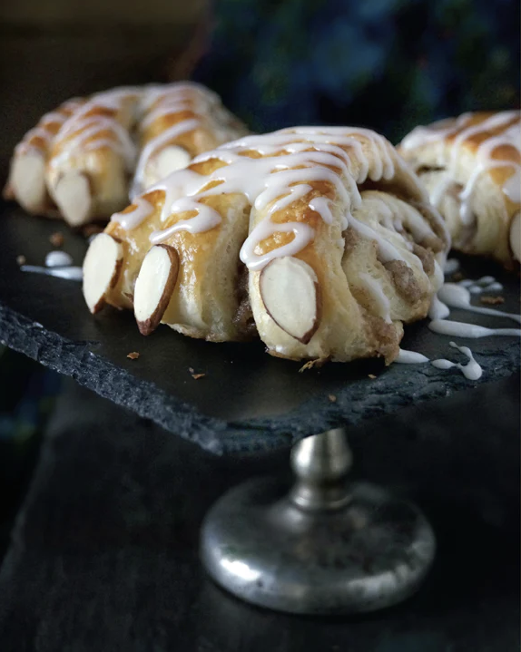

RYLAK CLAWS

This pastry version of Rylak Claws is infinitely preferable to being on the business end of a real rylak. Filled with a sweet, flavorful layer, each flaky "claw" is melt-in-your-mouth delicious, not to mention an impressive treat for guests!
INGREDIENTS
- 1/2 batch Buttery Pastry Dough
- 1 egg, beaten, for glaze
- 1/4 cup sliced almonds
- 1 batch Drizzled Icing
FILLING
- 4 tablespoons softened butter
- 2/3 cup almond paste
- 1/2 cup white sugar
- 1/4 cup brown sugar
- 1 tablespoon cinnamon
STEPS
- In a small bowl, combine all the filling ingredients until very smooth.
- Preheat the oven to 400F. On a lightly floured surface, roll out the dough to a rectangle roughly 20 x 10 inches.
- Spread the filling evenly over the entire surface, leaving a small gap on one long side. Gently begin rolling the dough up lengthwise, rolling toward the exposed gap of dough. Press to seal the edge.
- Using a sharp knife, make alternating diagnol cuts down the length of the dough to create small wedge-shaped rolls. Place these rolls on a baking sheet lined with parchment paper, leaving at least 2 inches between each. To make the "toes," cut 2 slits in the wider end of each roll, pinching the three pieces into slightly more pointed shapes. Repeat with all of the rolls, then cover lightly and let them rise in a warm place for about 30 minutes. When ready to bake, brush with a beaten egg. While the egg is still sticky, place an almond slice on the end of each "toe." Bake for 10 to 12 minutes, or until golden brown.